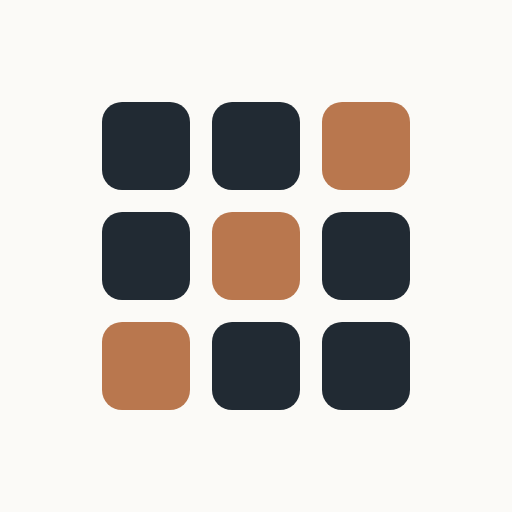

Utbildning i Umeå
Excel-utbildning, BAM och ledarskap i Umeå och på distans.

Centrum för Organisationsutveckling erbjuder Excel-utbildning i Umeå, verksamhetsanpassad och med högt betyg från deltagarna. Vi håller även BAM-utbildning (Bättre Arbetsmiljö) och ledarskapsutbildning för organisationer i Umeå och Västerbotten.
Vi tror på att hållbar förändring och lärande sker inifrån med hjälp av psykologiskt kunnande. Vårt arbete bygger på gedigen erfarenhet, evidensbaserat förhållningssätt och ett genuint engagemang för de människors beteende och de verksamheter vi möter. Vi lyssnar innan vi agerar och anpassar alltid utbildningen utifrån er verksamhet.
Oavsett om ni behöver en punktinsats inom Excel eller ett längre program i ledarskap, utgår vi alltid från er situation. Vi kartlägger behoven, formulerar tydliga mål och följer upp resultaten. Utbildning är inte ett mål i sig, utan ett verktyg för förändring som faktiskt håller.
Utforska
Hur vi arbetar
Vi tror inte på standardupplägg som levereras rakt av. Varje uppdrag börjar med ett samtal om er verksamhet, era medarbetare och de utmaningar ni vill ta itu med. Utifrån det lägger vi upp en utbildning som passar er, inte en hylla vi plockar från.
Vår Excel-utbildning i Umeå utgår från de arbetsuppgifter deltagarna faktiskt möter. Det innebär att vi arbetar med verkliga filer, verkliga problem och verkliga arbetsflöden. Det ger ett lärande som sitter kvar långt efter utbildningsdagen.
I BAM-utbildningen och ledarskapsutbildningen kombinerar vi aktuell forskning med praktiska övningar och gruppdiskussioner. Chefer och skyddsombud får med sig konkreta verktyg de kan använda direkt, inte en tjock pärm som ställs i hyllan.
Vi arbetar med organisationer i hela Västerbotten och Norrland, och håller utbildningar hos er, i egna lokaler i Umeå eller på distans. Flexibiliteten är en självklarhet, inte ett tillägg.
Vanliga frågor
Vad ingår i en Excel-utbildning hos er?
Vår Excel-utbildning anpassas efter er verksamhet och er personals förkunskaper. Vi går igenom de funktioner och arbetsflöden som faktiskt används i er vardag, allt från grunderna till avancerade formler, pivottabeller och dataanalys. Utbildningen hålls i Umeå eller på distans.
Vad är BAM-utbildning och vem behöver den?
BAM står för Bättre Arbetsmiljö och är en grundläggande utbildning i systematiskt arbetsmiljöarbete. Den riktar sig till chefer och skyddsombud och ger de verktyg som krävs för att arbeta förebyggande med arbetsmiljöfrågor. Kursen uppfyller Arbetsmiljöverkets krav.
Hur skiljer sig er ledarskapsutbildning från andra?
Vår ledarskapsutbildning bygger på psykologisk kunskap och evidensbaserade metoder. Vi fokuserar på verkliga utmaningar i ledarrollen: kommunikation, feedback, gruppdynamik och psykologisk trygghet. Ingen teori för sin egen skull, utan ett praktiskt ledarskap som fungerar i vardagen.
Kan ni komma till oss, eller hålls utbildningarna på en fast plats?
Vi håller utbildningar hos er på er arbetsplats, i egna lokaler i Umeå eller på distans via digitala verktyg. Vi anpassar formen efter vad som passar er bäst.
Hur bokar vi en utbildning?
Enklast är att höra av sig via kontaktformuläret eller e-post. Vi tar en dialog om era behov och sätter ihop ett upplägg anpassat efter er verksamhet. Det kostar ingenting att fråga.